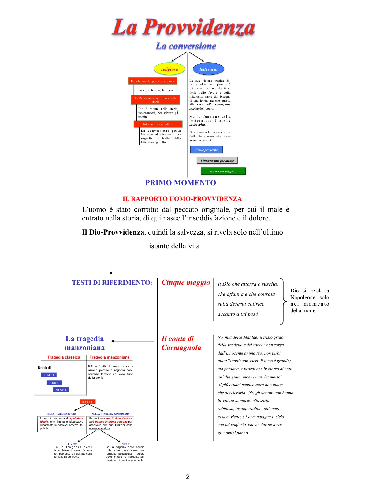

Lezione completa
Lezione su Alessandro Manzoni
Una lezione completa, ordinata e installabile: tutta la struttura del PDF trasformata in un percorso web leggibile, con testi, schemi e pagine dedicate ai passaggi decisivi.
Che cosa trovi in questa app
Questa PWA ricostruisce l’intera lezione su Manzoni a partire dal PDF originale, senza tagliare i passaggi decisivi. La struttura segue il movimento del testo: conversione, primo momento della Provvidenza, secondo momento, I promessi sposi e i capitoli-chiave del romanzo.
conversione religiosautile - interessante - verotragedia manzonianaProvvidenzaprovvida sventurapersonaggi redenti

Percorso
1. La conversione
Dal trauma vissuto a Parigi nel 1810 alla svolta religiosa e letteraria.
Dal trauma vissuto a Parigi nel 1810 alla svolta religiosa e letteraria.
2. Primo momento
Il Dio-Provvidenza si rivela soprattutto sul limite della morte: Il cinque maggio e Il conte di Carmagnola.
Il Dio-Provvidenza si rivela soprattutto sul limite della morte: Il cinque maggio e Il conte di Carmagnola.
3. Secondo momento
Con la Pentecoste e soprattutto con I promessi sposi la Provvidenza agisce nella storia.
Con la Pentecoste e soprattutto con I promessi sposi la Provvidenza agisce nella storia.
4. Il romanzo
Il vero storico, la lingua, la funzione pedagogica, il sistema dei personaggi e i capitoli esemplari.
Il vero storico, la lingua, la funzione pedagogica, il sistema dei personaggi e i capitoli esemplari.
Nucleo del pensiero
Manzoni non cerca più la perfezione nel mito, come voleva il neoclassicismo. Dopo la conversione la perfezione si sposta nella storia, perché Dio si è incarnato nella storia. Per questo la letteratura deve cambiare oggetto, tono e funzione: non più miti esemplari e armonia astratta, ma la condizione reale dell’uomo, soprattutto degli ultimi.
L’utile per scopo, l’interessante per mezzo, il vero per soggetto.
Materiale originale
Il PDF caricato è incluso dentro l’app. Serve sia come archivio sia come confronto visivo con gli schemi originali.